Friedrich Dürrenmatts Stoffe-Projekt als digitale Edition
Table of Contents
- Abstract
- Gegenstand und Inhalte der EditionIm Mai 2021 fand am Lehrstuhl für Digital Humanities der Bergischen Universität Wuppertal ein interner Test der vorläufigen Beta-Version des Stoffe-Projekts statt. An dieser Testgruppe war auch die Verfasserin dieses Reviews beteiligt. Im Vorfeld der Veröffentlichung des Projektes wurden dabei von den Tester*innen sowohl eine Bewertung des Gesamteindrucks als auch Detailbeobachtungen vorgenommen. Relevante Parameter waren u. a. die Funktionalität, die Benutzbarkeit und das Layout der Edition. Die Ergebnisse der Auswertung wurden den Herausgebern der Edition zur Verfügung gestellt.
- Ziele und Methoden
- Umsetzung und Präsentation
- Benutzerführung
- Soziabilität und Ausgabegeräte
- Daten
- Fazit
- Bibliography
- Notes
Abstract
The Stoffe-project is a text-genetic hybrid edition that digitally processes and presents the works of the Swiss writer Friedrich Dürrenmatt (1921–1990). The estate is part of the founding inventory of the Swiss Literary Archives (SLA), where it has been indexed since 1991, one year after Dürrenmatt’s death, and initially digitally processed in a preliminary version. This served as the scientific basis for the five-volume print edition that was published in May 2021. Editors are Rudolf Probst and Ulrich Weber. The sophisticated new edition is linked to a digital edition in which Dürrenmatt’s autobiographical works can be explored. In the three sections “Text”, “Genesis”, and “Archive”, the online edition offers, on the one hand, the text of the selection edition in digital form, and, on the other hand, text-genetic tools for orientation, as well as the entire manuscript material in the scope of about 30,000 leaves in the form of facsimiles. Thus, Dürrenmatt’s most important work complex of the late oeuvre can be experienced as a process in all its dynamics and complexity. Although Friedrich Dürrenmatt’s complex of materials is made accessible in digital form, it does not meet common best practices of digital scholarly editions which in turn has a negative impact on its compliance with the FAIR principles.
Gegenstand und Inhalte der EditionIm Mai 2021 fand am Lehrstuhl für Digital Humanities der Bergischen Universität Wuppertal ein interner Test der vorläufigen Beta-Version des Stoffe-Projekts statt. An dieser Testgruppe war auch die Verfasserin dieses Reviews beteiligt. Im Vorfeld der Veröffentlichung des Projektes wurden dabei von den Tester*innen sowohl eine Bewertung des Gesamteindrucks als auch Detailbeobachtungen vorgenommen. Relevante Parameter waren u. a. die Funktionalität, die Benutzbarkeit und das Layout der Edition. Die Ergebnisse der Auswertung wurden den Herausgebern der Edition zur Verfügung gestellt.
Friedrich Reinhold Dürrenmatt, geboren am 5. Januar 1921 in Stalden im Emmental, gestorben am 14. Dezember 1990 in Neuenburg, war ein Schweizer Schriftsteller, Dramatiker und Maler. Viele seiner Romane und Erzählungen wurden auch als Hörspiel bearbeitet. Von beinahe allen Werken existieren unterschiedliche Fassungen. Im Fokus stehen autobiographische Werke, Korrespondenzen und Lebensdokumente. Gegenstand der Rezension ist die digitale Edition2 des Stoffe-Komplexes Friedrich Dürrenmatts. Die Stoffe sind ein unvollendeter Lebensbericht voller Geschichten und Prosa-Skizzen, die Dürrenmatt zu seinen Lebzeiten nicht publizieren konnte. Der Mehrwert der digitalen textgenetischen Hybridedition liegt in der Sichtbarmachung des dynamischen Schaffens- und Schreibprozesses Dürrenmatts. Das autobiographische Schreiben wird selbst zum Stoff, zum Drama, das sich in der Mikrogenese in Form von händischen redaktionellen Überarbeitungen in den Typoskripten widerspiegelt. Ziel des Editionsprojekts ist nicht die Herstellung einer editorisch konstituierten Textversion; stattdessen zeigt die Edition einen Weg auf, wie die komplexe Textgenese, die durch das ständige Kreisen der Gedanken und des Umformulierens beeinflusst wird, dargestellt und digital umgesetzt werden kann.
Über zehn Jahre lang haben die Herausgeber Ulrich Weber und Rudolf Probst an der Druckausgabe gearbeitet und die mehr als 30.000 hinterlassenen Seiten des Stoffe-Archivs akribisch gesichtet. Ziel der fünf Bände ihrer Neuedition (Weber und Probst 2021) ist es, den Leser*innen sämtliche Textvarianten, Nebennotizen, Lektürequellen und Aufbau-Skizzen bis hin zum finalen Manuskript zugänglich und nachvollziehbar zu machen (Funk 2021; SNB 2020). Sowohl die gedruckte Neuauflage als auch die digitale Edition übernehmen die ursprüngliche Terminologie des Ablagesystems aus Dürrenmatts ehemaligem Sekretariat. Das digitale Medium erlaubt zudem Querverweise zu anderen Parallel- und Textstellen sowie Referenzen zu Bilddokumenten. Beide Ausgabeformate, die digitale Edition und die Druckausgabe, nutzen dafür ein identisches typografisches Symbolsystem. Die Online-Präsentation der Edition verweist auf den Diogenes Verlag, Herausgeber der Druckfassung, der sich alle Rechte vorbehält.3 Darüber hinaus lassen sich mangels Dokumentation der Auswahlkriterien der digital präsentierten Materialien keine Rückschlüsse auf mögliche Hintergründe dieser editorischen Entscheidung ziehen.
Die Edition ist in drei übergeordnete Bereiche aufgeteilt, die in sich miteinander verknüpft sind. Unter Archiv 4 stellt sie die 30.000 Manuskriptseiten, die in über 350 Textzeugen überliefert sind, in Abbildungen und überwiegend auch mit Transkriptionen zur Verfügung. Die Archivnomenklatur wurde bereits bei der Erschließung des Nachlasses berücksichtigt und die Reihenfolge und Ordnung der Manuskriptsignaturen beibehalten. Der dynamische Arbeits- und Schaffensprozess Dürrenmatts an seinem autobiographischen Stoffe-Projekt wird im Bereich Genese 5 durch unterschiedliche exemplarische Zugänge visualisiert. Der dritte Bereich gibt den vollständigen Text 6 der gedruckten Buchausgabe band-, text- und seitenidentisch wieder. Von hier aus sind sämtliche Originalmanuskripte aus dem Nachlass der Stoffe zugänglich.
Innerhalb der drei Zugänge bereitet die Edition das Material unterschiedlich auf. Das Projekt umfasst audiovisuelle Medien und interaktive Komponenten. Ton- und Filmdokumente im Archiv geben einen Einblick in die Lebens- und Arbeitsweise Dürrenmatts. Das Film- und Tonmaterial markiert dabei eine von mehreren Subkategorien innerhalb der Edition. Aufgrund ihrer Navigation und Menügestaltung vermittelt die Edition zunächst den (falschen) Eindruck, ihr Schwerpunkt läge auf audiovisuellen Medien und nicht auf der schriftlichen Überlieferung des Stoffe-Komplex. Dies ist ein Defizit der Ausgabe. Weitere Bestandteile des Stoffe-Projekts sind das umfangreiche Handschriftenmaterial, Schreibmedien, bzw. Textsorten und Genres. Dokumenttypen wie beispielsweise Arbeitsfassungen, Reinschriften, Notizhefte und Computertexte sind im Archiv-Bereich der Edition im linken Menü über einen Button oben links auf der Seite aufrufbar. Eine Timeline 7 und komplexe Stemmata 8 im Bereich zur Genese visualisieren das chronologische Erscheinen der Manuskripte, Arbeitsfassungen sowie damit zusammenhängende biographische Ereignisse. Durch diese exemplarischen Zugänge versucht die Edition die literarische Entwicklung der Stoffe nachvollziehbar und verständlicher zu machen. Volltexte stehen im Bereich Text zur Verfügung und können im PDF-Format auf Seitenbasis heruntergeladen werden. Optisch gleichen diese dem Layout der gedruckten Fassung. Weitere Kontextmaterialien und Bibliografien stehen nicht zur Verfügung.
Ziele und Methoden
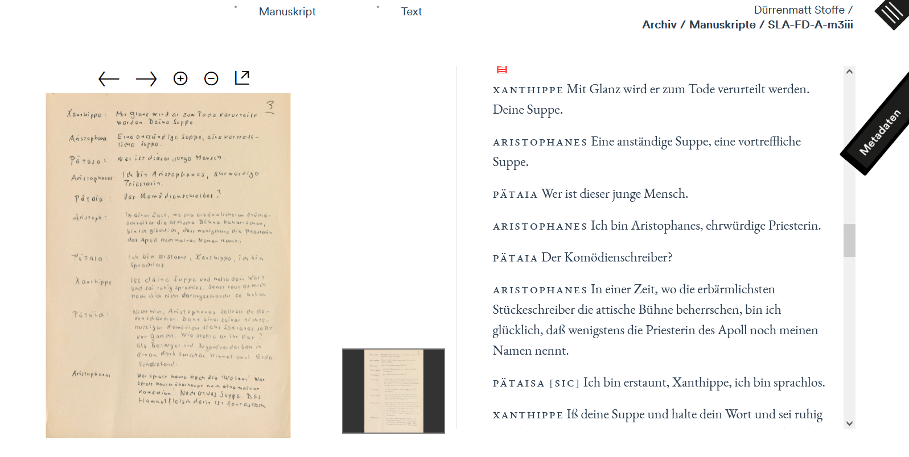
Ein großer Kritikpunkt an der digitalen Edition des Stoffe-Projekts ist, dass keine Angaben zur technischen Umsetzung gemacht werden. Es gibt keine öffentliche Dokumentation, die nähere Informationen zum verwendeten Datenmodell und -format gibt. Folglich kann keine Aussage über die Art der Modellierung (und inwiefern diese gängigen Standards entspricht) getroffen werden.
Umsetzung und Präsentation
Im Rahmen des Vortrags erklärten die Herausgeber, die Stoffe-Edition sei auf technischer Seite unabhängig von umliegenden Technologien wie Datenbanken und Programmbibliotheken, ohne zu spezifizieren, welche Art von Datenbank, Server, Programmbibliotheken oder APIs genau verwendet wurden. IT-Support für die Implementierung leistete Micro Solutions Software & Communications GmbH,10 Unterstützung bei der Datenmodellierung pagina GmbH,11 so die Herausgeber.
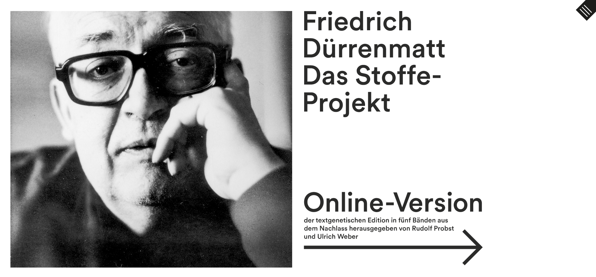
Kritisch ist der Umgang mit der Konsole, um Ressourcen und Inhalte einer Website mit Entwicklertools moderner Browser zu analysieren, da dieser – zumindest was den schnellen Zugriff per Rechtsklick angeht – von der Website gesperrt ist. Damit ist der Blick ‚hinter die Fassade‘ und somit in den Quellcode nicht bzw. nur über Umwege möglich, um beispielweise herauszufinden, welche Schriftarten die Edition für die unterschiedlichen Bereiche (z. B. für den Editionstext) verwendet.
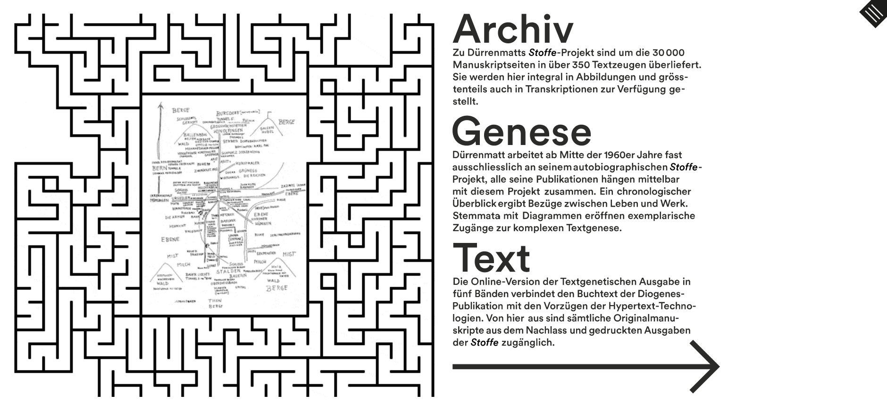
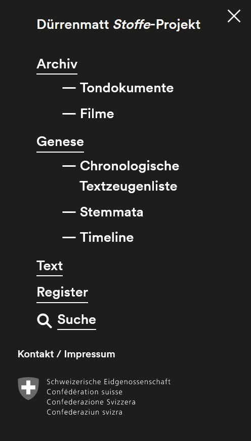
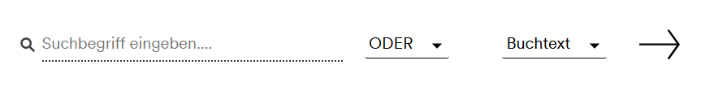 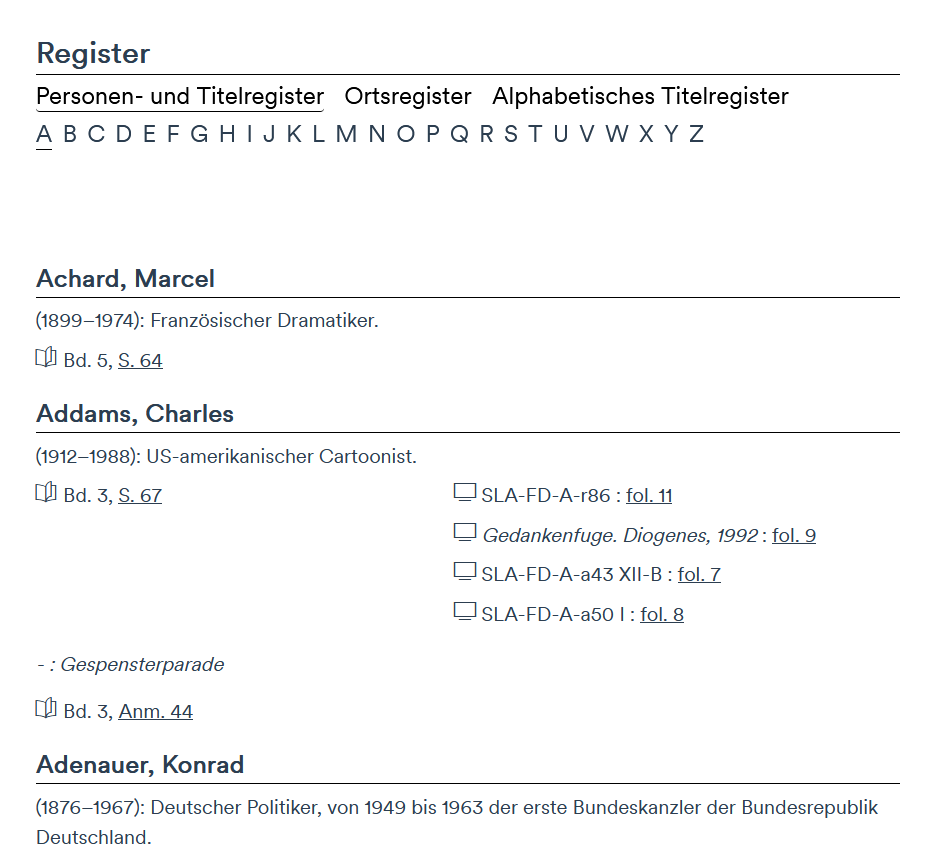
Die URLs der Seiten sind kurz und prägnant. Allerdings gibt das Projekt keine konkrete Empfehlung für deren Zitation. Das gilt auch für die Video- und Tondokumente. Damit stellt sich die Frage, wie granular die Editionsinhalte (z. B. Lesetexte oder Bildinhalte wie Faksimiles) zitierbar sind. Wie können sowohl einzelne Seiten als auch Objekte (z. B. ein Video oder eine Tonaufnahme) innerhalb der Edition nicht nur ordentlich zitiert, sondern auch persistent verfügbar gemacht werden? Die einzelnen Inhaltsobjekte im Stoffe-Projekt haben keine klaren Adressen und sind damit nicht feingranular adressierbar oder referenzierbar. Da die Edition keine Angaben zu APIs, d. h. zu technischen Schnittstellen, macht, muss man als Betrachter zu dem Schluss kommen, dass es keine gibt. Somit bietet das Stoffe-Projekt keine Option zum „Harvesten“ der Daten und lässt sich auch nicht in andere, übergreifende Systeme integrieren. Eine Download-Option für die Daten, d. h. die transkribierten Texte und die Faksimiles, gibt es nicht. Lediglich die Lesetexte können im PDF-Format heruntergeladen werden.
Benutzerführung
Die Edition weist einige technische Mängel und Unzulänglichkeiten auf: Beispielsweise dauert es mehrere Sekunden, bis die Startseite geladen ist. Vereinzelt kommt es auch beim PDF-Download einzelner Textseiten zu Ladezeitverzögerungen. Die neu geöffneten Tabs sind außerdem leer. Insgesamt ist die Suchfunktion sehr basal gehalten. Es gibt keinen Hinweis darauf, was wo und wie durchsucht und gefunden werden kann. Innerhalb des Suchbereichs sollten die Register und bereitgestellten Metadaten miteinbezogen werden. Die Zweiteilung bzw. Unterscheidung in „Personen- und Titelregister“ versus „Titelregister“ ist nicht ohne Weiteres verständlich. Bei näherer Betrachtung wird deutlich, dass es sich hierbei um die gleichen Titel handelt, nur anders geordnet.
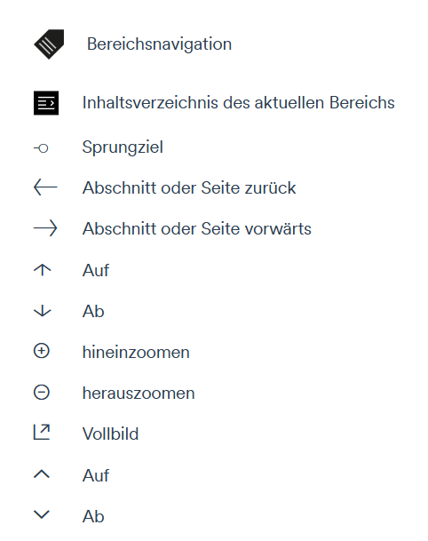 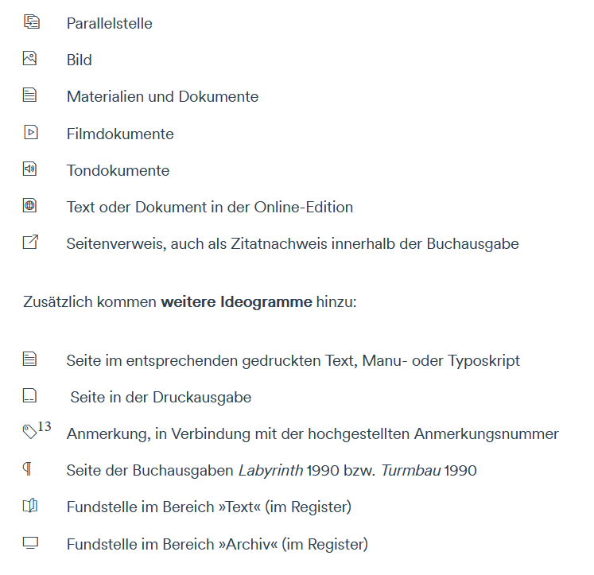
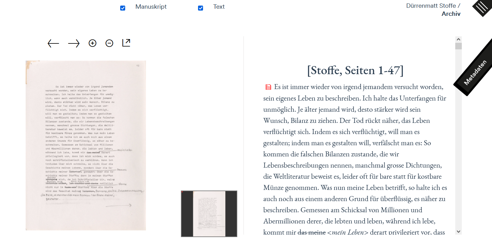
Der Begrüßungstext innerhalb von Text markiert einen gewissen Bruch zu den anderen Inhalten. Das ausklappbare Inhaltsverzeichnis auf der linken Seite erlaubt eine Navigation innerhalb der Bände und die Auswahl einzelner Kapitel. Die Texte selbst sind gut lesbar und wirken in ihrer Darstellung aufgeräumt. Die Verweise sind als Links realisiert und bringen einen funktionalen Mehrwert, indem sie das Stoffe-Projekt und seine inhaltlichen Komponenten miteinander verknüpfen. Die Referenzen auf Dokumentfaksimiles sind allerdings weniger offensichtlich und könnten durchaus prägnanter hervorstechen, damit sie sich der Nutzer*in unmittelbar erschließen. Grundsätzlich sollten alle Links und verlinkten Icons mit einem Tooltip versehen sein, damit das Linkziel bzw. die Funktion des Elements klar ist, bevor die Nutzer*in daraufklickt. Ein übergeordnetes Feld im Header des Textbereichs erlaubt die Eingabe von Seitenzahlen.
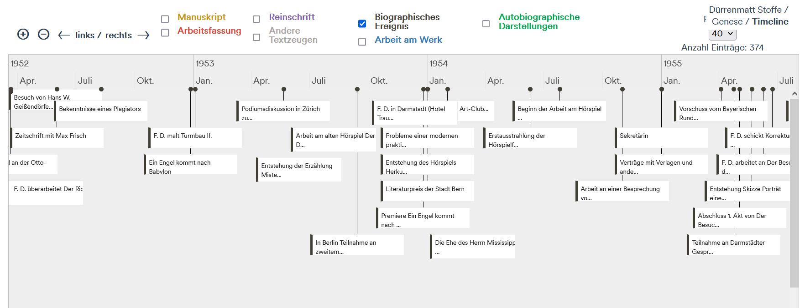
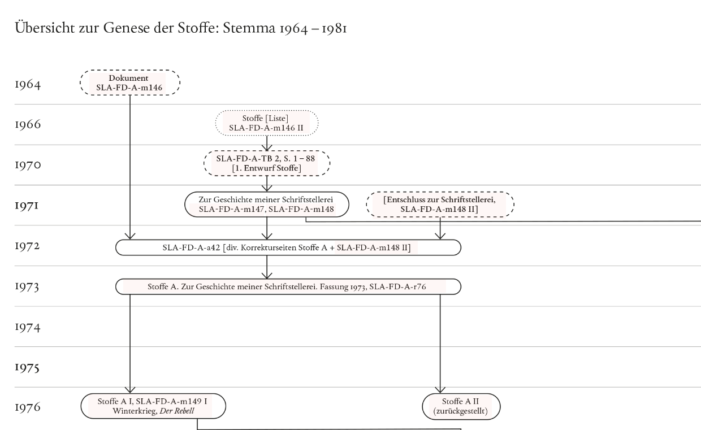
Als dritter und letzter Bestandteil der Genese visualisiert eine Textzeugenliste die überlieferten Textzeugen. Die Tabelle als Mittel der Darstellung ist gut gewählt, um neben der Timeline ein zusätzliches Werkzeug für die Anzeige chronologischer Abfolgen anzubieten. Die Sortierung beginnt mit der ältesten Quelle. Die Kolumnen sind zusätzlich nach Signatur, Titel und Datierung sortierbar. Eine weitere Spalte zeigt an, ob der Textzeuge Teil der Druckedition ist.
Soziabilität und Ausgabegeräte
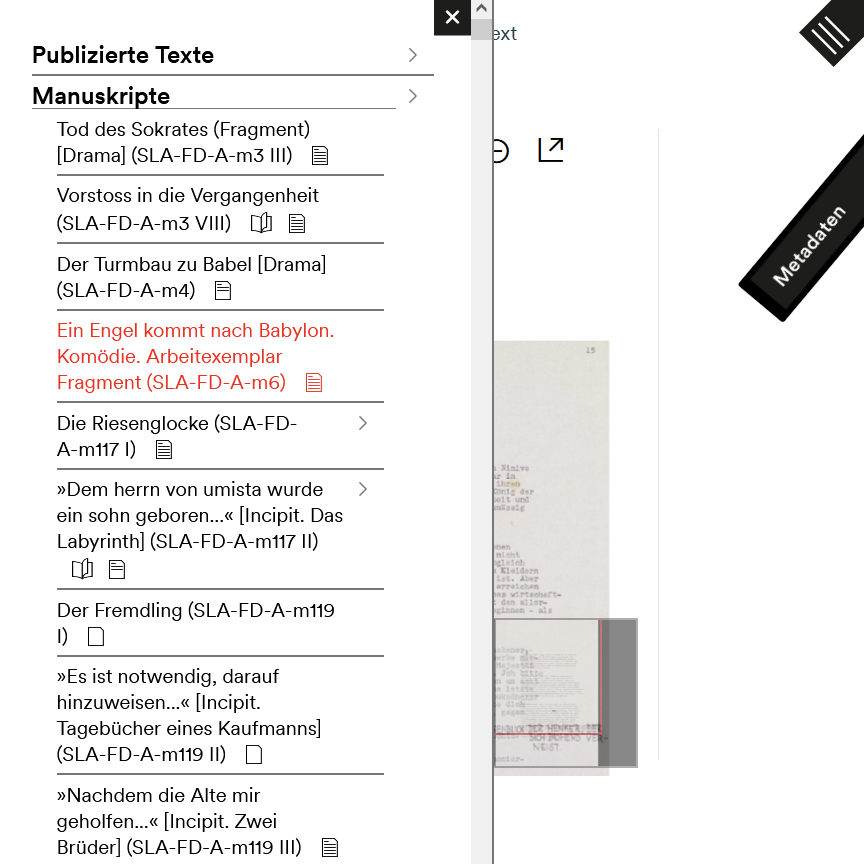
Daten
Die Grunddaten der Edition sind weder auffindbar noch zugänglich. Wie die Herausgeber in dem bereits erwähnten Vortrag am IZED erklärt haben, wurden für die Dürrenmatt-Edition projekteigene Kodierungsrichtlinien entwickelt. Diese kämen einer Kodierung nach den Richtlinien der Text Encoding Initiative (TEI)14 zwar sehr nahe, entsprächen diesen aber nicht. Daher ist es fraglich, inwieweit die Daten des Stoffe-Projekts interoperabel und wiederverwendbar sind, sobald sie außerhalb der für die Edition konzipierten technischen Infrastruktur genutzt werden. Die Interoperabilität der Edition wird, abgesehen von dem projekteigenen Kodierungsschema, auch durch den Verzicht auf eine Erschließung mit Normdaten (z. B. GND für Personen im Register) weiter eingeschränkt.
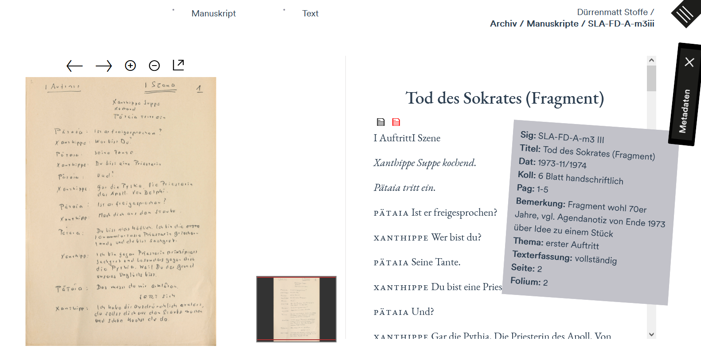
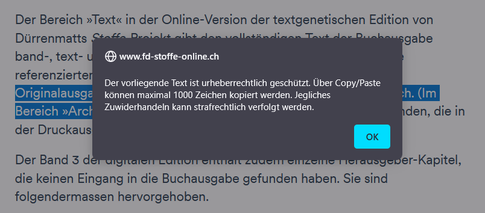
Innerhalb der Edition gibt es keinen Bereich mit thematisch einführenden und erläuternden Texten, die das Projekt kontextualisieren. Auch die Nennung aller Beteiligten fehlt. Die Auswahl der Inhalte sowie deren Herkunft ist in der chronologisch sortierten Textzeugenliste15 nachvollziehbar. Tabellarisch beinhaltet sie unter anderem die Signatur, den Titel und die Datierung sowie Angaben über die Texterfassung. Die Editionsrichtlinien, die für die Wiedergabe der Manuskripte konzipiert wurden, sind im Bereich Text zu Beginn kurz zusammengefasst. Für eine detaillierte Aufführung über die Prinzipien der Textwiedergabe wird auf Band 1, Seite 2416 Zur Geschichte meiner Schriftstellerei in der Druckausgabe verwiesen.
Da es zum jetzigen Zeitpunkt weder eine konkrete Zitierempfehlung noch Permalinks für eine dauerhafte Adressierung sowohl auf Makroebene (Website) als auch auf Mikroebene (Objekte, wie Tonaufnahme, Video, Bild) gibt, ist die Aussicht auf eine dauerhafte Nutzbarkeit und Verfügbarkeit der Ressource eher fraglich. Aufgrund fehlender Angaben über ein Repositorium, welches die langfristige Speicherung der Daten ermöglichen soll, ist ebenso ungewiss, ob die verantwortlichen Institutionen den Erhalt der Daten oder gar der Präsentation planen.
Fazit
Bei der Entwicklung digitaler Editionen und ihrer Methoden für die erschließende Wiedergabe historischer Dokumente und Texte haben sich in der einschlägigen Community bestimmte best practices etabliert, die u. a. im Kriterienkatalog des IDEs (Sahle 2014) dokumentiert sind. Das Stoffe-Projekt setzt viele dieser best practices nur unzureichend oder gar nicht um. State-of-the-Art in digitalen Editionen ist heutzutage beispielsweise die Kodierung in XML/TEI. Ohne die Verwendung dieses De-Facto-Standards digitaler Editionen sind Nachnutzung und Austauschbarkeit der Ressourcen nur schwierig zu gewährleisten. Digitale Editionen (aber auch Druckeditionen) arbeiten üblicherweise nach spezifischen Editionsrichtlinien, die hier in keiner Weise transparent gemacht werden, von einem formalisierten technischen Schema der Kodierung (z. B. XML-Schema, rng oder ODD) ganz zu schweigen. Ebenso fehlt eine ausführliche Dokumentation zu sämtlichen Schritten der Erstellung und Bearbeitung des Editionsprojekts. Die Rezipient*innen können über die verwendeten Methoden und Praktiken nur spekulieren, da die Editoren ihre Entscheidungen wenig bis gar nicht explizit machen. Insgesamt werfen die in der Rezension thematisierten Mängel die Frage auf, ob das Projekt selbst gar nicht den Anspruch erhebt, als digitale Edition gewertet zu werden, sondern sich selbst möglicherweise vielmehr (‚nur‘) als digitales Archiv oder digitale Begleitpublikation versteht.
Die nicht eingehaltenen Standards für digitale Editionen haben Auswirkungen auf die Umsetzung der FAIR-Prinzipien, mit deren Hilfe „Forschungsdaten für Menschen und Maschine optimal aufbereitet und zugänglich“ (FAIRe Daten) gemacht werden sollen. Für das Stoffe-Projekt kann festgehalten werden, dass in so gut wie allen Bereichen der FAIRness, insbesondere aber auf der technisch-datenbasierten Seite, Nachholbedarf besteht. So ist die digitale Edition zwar jenseits der Datenebene via Google-Recherche findable (Suchbegriff „Dürrenmatt Stoffe“), allerdings bezieht sich findability nicht nur auf die Auffindbarkeit im Netz, sondern auch auf einzelne Bestandteile wie die Daten. Eine klare Forderung des IDE-Kriterienkatalogs (Sahle 2014) legt fest, dass einzelnen Inhaltsobjekten klare Adressen vergeben werden sollen und müssen, um sie feingranular adressierbar und referenzierbar zu machen. Zusätzlich sollte jede digitale Edition über Zitationshinweise verfügen und Permalinks auf Seiten- und Objektbasis erstellen. Beide Punkte finden innerhalb des Stoffe-Projekts keine Umsetzung. Des Weiteren werden die Datensätze, darunter neben den Transkriptionen auch Archivdokumente, nicht accessible gemacht, obwohl z. B. ein Bulk-Download eine einfache Lösung der Bereitstellung wäre. Ebenfalls mit geringem Aufwand könnte man die Sichtbarkeit, Nachnutzung und Langzeitarchivierung der Daten durch die Einspeisung in ein Repositorium (z. B. Zenodo) steigern. Da aufgrund der fehlenden Dokumentation an keiner Stelle ersichtlich wird, inwiefern der XML/TEI-Standard bei der Datenmodellierung berücksichtigt wurde, ist wiederum fraglich, ob ein Transfer über Schnittstellen mit anderen Systemen möglich ist und wie interoperable die Daten schlussendlich sind. Gleiches gilt für die Frage, wie reusable die Edition und ihre Daten sind; eine Angabe zur Lizenz fehlt.
Grundsätzlich ist unklar, wie viel Einfluss der Verlag auf den Publikationsprozess der digitalen Edition hat. Es ist undurchsichtig, wie die Projektkonstellation zwischen dem Verlag und den Editor*innen aussieht und von welcher Seite aus entschieden wurde, welche Bestandteile des Nachlasses mit welcher Begründung digital veröffentlicht werden und welche nicht. Diese Tendenz einer Beschränkung und Eingrenzung macht sich auch im Umgang mit dem Quellcode der Edition bemerkbar. Für Entwickler*innen im Bereich digitaler Editionen ist es Usus, die Kodierung und Umsetzung verschiedener Projekte zu besprechen. Die Website des Stoffe-Projekts reizt hingegen ihre Möglichkeiten aus, die Einsicht des Quellcodes zu erschweren, auch wenn sie diese technisch nicht gänzlich verhindern kann.
Jenseits aller „handwerklichen Fragwürdigkeit“ macht die Edition Dürrenmatts wichtigsten Werkkomplex des Spätwerks in seiner ganzen Dynamik und Komplexität als Prozess erfahrbar. In den drei Bereichen Text, Genese und Archiv bietet die Online-Ausgabe einerseits den Text der Auswahlausgabe in digitaler Form, andererseits textgenetische Werkzeuge zur Orientierung sowie das gesamte Handschriftenmaterial im Umfang von rund 30.000 Blättern in Form von Faksimiles. Die digitale Aufbereitung, Erschließung und Präsentation des Nachlasses, insbesondere des Archivs, profitieren von den Möglichkeiten des digitalen Mediums, in dem Querverweise, Referenzen und unterschiedliche Visualisierungen implementiert sind, um die komplexe Textgenese in seiner Gesamtheit darzustellen und nutzbar zu machen. Abseits der drei Haupteinstiegsmöglichkeiten auf übergeordneter Ebene durch Text, Genese und Archiv ermöglicht das Angebot von Lesetext, Transkription und Faksimile unterschiedliche Ansichten und somit unterschiedliche Zugänge zu dem Korpus. Damit stellt die digitale Edition als Begleitpublikation zum Druck ohne Zweifel eine für die Forschung gewinnbringende Ergänzung dar, auch wenn die Potentiale des digitalen Mediums nur bedingt ausgeschöpft wurden und die Edition an vielen Stellen hinter etablierte best practices der Digital Humanities zurückfällt.
Bibliography
- „FAIRe Daten. Wie die FAIR-Prinzipien umgesetzt werden können“. In Forschungsdaten.info, https://web.archive.org/web/20230425082930/https://forschungsdaten.info/themen/veroeffentlichen-und-archivieren/faire-daten/.
- Funk, Gisa. 2021. „Friedrich Dürrenmatt. Das Stoffe-Projekt. Hinter tausend Spiegeln“ (Radiobeitrag). In Deutschlandfunk, https://web.archive.org/web/20230425082236/https://www.deutschlandfunk.de/friedrich-duerrenmatt-das-stoffe-projekt-hinter-tausend-100.html.
- Sahle, Patrick (unter Mitarbeit von Georg Vogeler et al.). 2014. „Kriterien für die Besprechung digitaler Editionen, Version 1.1.“ In RIDE: A Review Journal for Digital Editions and Resources https://web.archive.org/web/20230120160031/https://www.i-d-e.de/publikationen/weitereschriften/kriterien-version-1-1/.
- Schweizerische Nationalbibliothek (SNB). 2020. „Friedrich Dürrenmatt: Das Stoffe-Projekt. Textgenetische Edition in fünf Bänden.“ https://web.archive.org/web/20230425083714/https://www.nb.admin.ch/snl/de/home/ueber-uns/sla/publikationen/editionen/fd-stoffe.html.
- Weber, Ulrich und Rudolf Probst (Hrsg.). 2021: Das „Stoffe-Projekt“. Textgenetische Edition in fünf Bänden im Schuber verbunden mit einer erweiterten Online-Version. Mit einem einleitenden Essay von Daniel Kehlmann. https://web.archive.org/web/20230425082637/https://www.diogenes.ch/leser/titel/friedrich-duerrenmatt/das-stoffe-projekt-9783257071016.html.
Notes
- Im Mai 2021 fand am Lehrstuhl für Digital Humanities der Bergischen Universität Wuppertal ein interner Test der vorläufigen Beta-Version des Stoffe-Projekts statt. An dieser Testgruppe war auch die Verfasserin dieses Reviews beteiligt. Im Vorfeld der Veröffentlichung des Projektes wurden dabei von den Tester*innen sowohl eine Bewertung des Gesamteindrucks als auch Detailbeobachtungen vorgenommen. Relevante Parameter waren u. a. die Funktionalität, die Benutzbarkeit und das Layout der Edition. Die Ergebnisse der Auswertung wurden den Herausgebern der Edition zur Verfügung gestellt. ↑
- Offizielle Website der Edition: https://www.fd-stoffe-online.ch (05.01.2022). ↑
- Siehe: https://web.archive.org/web/20230406143229/https://www.fd-stoffe-online.ch/text/0. ↑
- Bereich Archiv: https://web.archive.org/web/20220805160920/https://www.fd-stoffe-online.ch/archiv. ↑
- Bereich Genese: https://web.archive.org/web/20220805161446/https://www.fd-stoffe-online.ch/genese. ↑
- Bereich Text: https://web.archive.org/web/20220808073610/https://www.fd-stoffe-online.ch/text. ↑
- Timeline mit Auswahl Biographisches Ereignis: https://web.archive.org/web/20220808073755/https://www.fd-stoffe-online.ch/timeline. ↑
- Übersicht zur Genese der Stoffe: Stemmata 1964–1981: https://web.archive.org/web/20220808073949/https://www.fd-stoffe-online.ch/stemmata. ↑
- Dürrenmatts Stoffe-Projekt. Vom Nachlass zur Hybridedition. Veranstaltungsankündigung und -einladung des Graduiertenkollegs „Dokument – Text - Edition“ auf der Website des IZED der Bergischen Universität Wuppertal: https://web.archive.org/web/20220808074239/https://www.ized.uni-wuppertal.de/de/home/. ↑
- Impressum, https://web.archive.org/web/20220808074512/https://www.fd-stoffe-online.ch/impressum. ↑
- pagina, offizielle Website: https://web.archive.org/web/20220808074740/https://www.pagina.gmbh/digital-humanities/konzeption-und-beratung/. ↑
- Suche, https://web.archive.org/web/20220808074919/https://www.fd-stoffe-online.ch/search. ↑
- Register, https://web.archive.org/web/20220808103013/https://www.fd-stoffe-online.ch/register/. ↑
- TEI-Guidelines, https://tei-c.org/guidelines. ↑
- Chronologische Textzeugenliste, https://web.archive.org/web/20220808075352/https://www.fd-stoffe-online.ch/chrontxtz. ↑
- Prinzipien der Textwiedergabe: https://web.archive.org/web/20220808075508/https://www.fd-stoffe-online.ch/text/1. ↑
@article{duerrenmatt,
author = {Sutor, Nadine},
title = {Friedrich Dürrenmatts Stoffe-Projekt als digitale Edition},
journal = {RIDE – A review journal for digital editions and resources},
number = {17},
year = {2023},
doi = {10.18716/ride.a.17.2},
url = {https://doi.org/10.18716/ride.a.17.2},
}TY - JOUR
AU - Sutor, Nadine
TI - Friedrich Dürrenmatts Stoffe-Projekt als digitale Edition
T2 - RIDE – A review journal for digital editions and resources
IS - 17
PY - 2023
DA - 2023/04
DO - 10.18716/ride.a.17.2
UR - https://doi.org/10.18716/ride.a.17.2
PB - Institut für Dokumentologie und Editorik e.V.
LA - de
ER - Sutor, N. (2023). Friedrich Dürrenmatts Stoffe-Projekt als digitale Edition. RIDE – A review journal for digital editions and resources, (17). https://doi.org/10.18716/ride.a.17.2Sutor, Nadine. "Friedrich Dürrenmatts Stoffe-Projekt als digitale Edition." RIDE – A review journal for digital editions and resources, no. 17, 2023. https://doi.org/10.18716/ride.a.17.2.Sutor, Nadine. "Friedrich Dürrenmatts Stoffe-Projekt als digitale Edition." RIDE – A review journal for digital editions and resources, no. 17 (2023). https://doi.org/10.18716/ride.a.17.2.